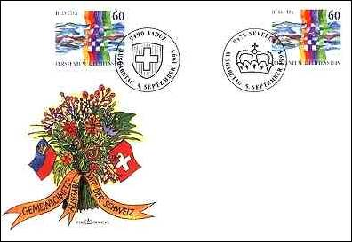
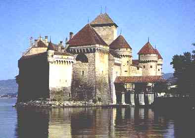

SWITZERLAND - LIECHTENSTEIN JOINT ISSUE
 |
 |
The image on the left shows a perfect joint issue. Switzerland and Liechtenstein issued the 5th September 1995 only one stamp, what was possible due to the postal and monetary union between both countries. These are Liechtenstein Scott No. 1055 and the Switzerland Scott No. 960. The stamp was and still is valid for postage in both countries, what is an exception, because the Swiss stamps are not valid in Liechtenstein and vice-versa. The nice FDC above shows the stamp cancelled in 9490 Vaduz, Liechtenstein (with the Swiss cross on the cancel) and the same stamp, another piece, cancelled in 9475 Sevelen, Switzerland (with the crown of Liechtenstein princes on the cancel). An onetime issue!
On the right hand an image of the Chillon, in Veytaux-Montreux is displayed; a short history of this old and interesting medieval castle follows. The rock on which Chillon stands was occupied by men of the Bronze Age and later by the Romans. The first medieval enclosure wall, whose date is unknown, was considerably enlarged and partly rebuilt from the 11th to the 13th centuries. Originally the property of the Bishops of Sion, it was held in fief by the counts of Savoy from the beginning of the 12th century. Under Peter II of Savoy, the architect Pierre Mainier gave the edifice its present size and appearance. The castle was captured in 1536 by the Swiss (Bernese) who used it, for many years, as a depot, armory and residence of their bailiffs. Indeed, it was they who covered in the defense turrets and battlements. In 1798, after the Vaudois Revolution, the Castle became the property of the Canton of Vaud. Restoration work began at the end of the 19th century. This restoration was made much easier by documents found in the archives, in which the dates of a great amount of work carried out since the end of the 12th century were discovered. (Source: Visitors' leaflet).
|
|